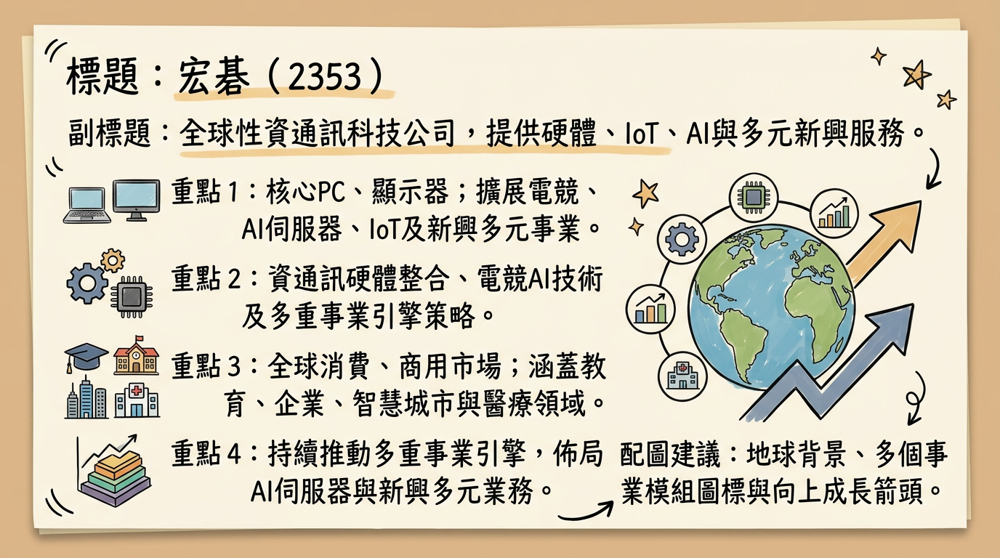
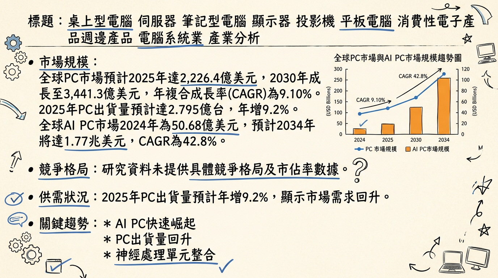
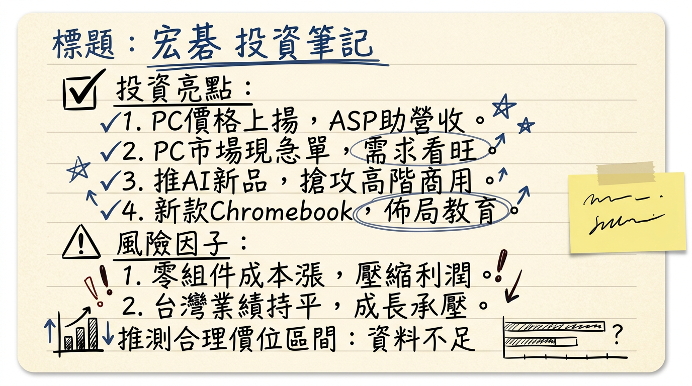

2353 宏碁 深度研究報告
一句話摘要
宏碁正成功轉型為多元事業引擎驅動的科技集團，非PC業務佔比已提升至42.1%（2026年1月），受惠於AI PC/伺服器浪潮與企業級解決方案成長。儘管面臨記憶體與硬碟成本上漲、高存貨水位（537億元）的挑戰，但公司透過產品組合優化與新興市場拓展，力拚2026年營運持穩成長，長期展望仍樂觀。
公司概覽
宏碁股份有限公司（Acer Inc., 股票代號2353）是一家全球性的資通訊科技公司，核心業務涵蓋電腦硬體與電子產品的設計、製造、行銷與銷售，並積極佈局多元新興事業，以「多重事業引擎」策略分散PC產業週期性風險。
主要產品與服務：
- 個人電腦 (PC)：桌上型電腦、筆記型電腦、Chromebook。
- 顯示器。
- 電競與高效能設備：Predator品牌電競筆電、桌機、周邊產品。
- 智慧裝置與物聯網 (IoT)：智慧顯示器、平板電腦、智慧城市解決方案。
- 伺服器與工作站：Altos Computing Inc.專攻AI伺服器和工作站。
- 雲端服務：教育雲、企業解決方案。
- 新興事業（小金虎策略）：
* 資安服務（安碁資訊, 6690）
* 數位雲端服務（宏碁資訊, 6811）
* 通路代理（展碁國際, 6776）
* 智慧醫療（宏碁智醫, 6857）
* 微型移動（e-Bikes、e-Scooters）
* 工業電腦、能源、家電等。
營收結構（非電腦及顯示器相關事業佔比）：
| 期間 | 佔總營收比例 | 備註 |
|---|
| 2026年1月 | 42.1% | 非PC業務持續成長 |
| 2025年第四季 | 33.4% | |
| 2025年全年 | 32.2% | 亦貢獻營業淨利的 37.4% |
| 2024年全年 | 28.3% | 貢獻營業淨利的 37.4% (此數據與2025年全年重疊，應為2024年全年之營業淨利貢獻) |
目前公開資訊中未找到2024-2026年關於宏碁具體製造基地及其個別營收貢獻比例的最新資料。宏碁業務遍及全球160多國，主要市場包括美國（2025年佔總營收的20%）、台灣及中國大陸。
核心競爭優勢
多重事業引擎策略奏效： 宏碁成功孵化並發展資安、雲端服務、通路代理、智慧醫療、工業電腦等「小金虎」子公司，非PC及顯示器業務營收佔比已達42.1%（2026年1月），有效降低對單一PC產品線的依賴，並帶來多元且穩定的成長動能與獲利來源。
積極佈局AI PC與AI伺服器： 宏碁是市場上最早推出搭載Intel Core Ultra系列3及AMD Ryzen AI 400系列處理器的AI PC品牌之一，並具備AI伺服器品牌Altos Computing。此策略使其能抓住AI時代的換機潮與企業AI運算需求，尤其在Copilot+ PC與AI工作站領域具領先優勢。
電競市場與商用/教育市場的穩固地位： 旗下Predator品牌持續深耕高階電競市場，電競及遊戲相關產品2026年1月營收年增53.4%。在Chromebook市場，2025年全球市佔位居前三，泛歐地區排名第一，並在印度獲得大型教育標案，顯示其在特定利基市場的競爭力。
永續發展與ESG領先： 首次入選《TIME》全球最永續企業和道瓊永續發展世界指數，推出碳中和筆電Acer Aspire Vero 16，提升品牌形象並符合全球永續採購趨勢。
財務分析
月營收趨勢
| 月份 | 金額 (新台幣億元) | 月增率 MoM | 年增率 YoY |
|---|
| 226年1月 | 210.77 | -26.15% | +39.83% |
| 25年12月 | 285.40 | +16.01% | +16.36% |
| 25年11月 | 246.01 | +15.87% | +8.14% |
| 25年10月 | 212.32 | -28.10% | +12.82% |
| 25年9月 | 295.30 | +35.43% | +12.24% |
| 25年8月 | 218.04 | -1.18% | -4.46% |
季度數據
| 季度 | 季營收 (新台幣億元) | 毛利率 (%) | 營業利益率 (%) | EPS (新台幣元) |
|---|
| 2025年第四季 | 743.73 | 未公布 | 未公布 | 0.42 (預估) |
| 2025年第三季 | 734.00 | 11.2 | 2.1 | 0.37 |
年度趨勢
| 年度 | 合併營收 (新台幣億元) | 年增率 YoY | 毛利率 (%) | 營業淨利率 (%) | EPS (新台幣元) |
|---|
| 2024年 (實際) | 2,646.82 | +9.69% | 10.6 | 1.8 | 1.84 |
| 2025年 (實際) | 2,756.42 | +4.1% | (未公布) | (未公布) | 1.31-1.46 (預估) |
| 2026年 (預估) | (未公布) | (未公布) | (未公布) | (未公布) | 1.72-1.99 (預估) |
法說會重點 (2025年11月24日、2026年3月4日新品發表會)
- 記憶體與零組件上漲影響： 宏碁董事長陳俊聖表示，記憶體、CPU皆缺貨大漲價，PC廠同步調升售價，部分消費者擔憂「晚點買會更貴」而提早添購PC，使得宏碁近期湧現急單，預計急單現象將維持一段時間，看好2026年仍是宏碁成長年。記憶體缺貨預期持續到2026年中旬，硬碟自2025年底缺貨並在2026年更明顯，影響政府機關標案交貨。
- 營運策略與展望：
* 宏碁力拚2026年台灣整體業績與2025年持平以上，預期市場將呈現「量跌價漲」結構，但因ASP上揚，整體金額仍會成長。
* 非電腦及顯示器相關事業營收佔2026年1月營收達42.1%，顯示多重事業引擎策略成效顯著。
* 旗下子公司安圖斯、海柏特、宏碁智新設定2026年營收皆須繳出雙位數成長的成績單。
* 安圖斯將逐步推出AI伺服器新品，計畫穩步過渡至輝達(NVIDIA)最新的Vera Rubin伺服器平台，並加速資本市場佈局，預計轉向上市櫃發展。
- 新品發表： 2026年3月4日推出多款新品，包括14吋立式平板（Acer Iconia X14、A14）、旗艦輕薄AI筆電Acer Swift 16 AI及迷你超級電腦Veriton Mini AI Workstation - RA100。
- 印度市場拓展： 宏碁已在印度拿到大型教育標案，將於2026年上半年陸續實現營收，有望帶動商用業務回溫。
- 產能利用率/資本支出： 未找到2025-2026年具體資料。
券商觀點
| 券商名稱 | 目標價 (新台幣元) | 評等 | 日期 |
|---|
| FactSet調查 | 28 | 綜合中位數 | 2026年1月13日 |
| FactSet調查 | 35 | 綜合最高估值 | 2026年1月13日 |
| Citi (花旗證券) | 21.00 | 賣出 | 2026年1月13日 |
| Morgan Stanley | 20.00 | 賣出 | 2025年11月16日 |
| FactSet調查 | 26 | 綜合中位數 | 2025年11月18日 / 11月25日 |
| 亞系外資 | 32.5 | (未明確) | 2023年12月22日 (⚠️過時) |
- 2025年EPS預估中位數： FactSet為1.31元至1.46元 (7位分析師)。財報狗平均1.34元 (最高1.41元，最低1.25元)。
- 2026年EPS預估中位數： FactSet為1.94元至1.99元 (7位分析師)。財報狗平均1.72元 (最高1.91元，最低1.46元)。CMoney法人平均預估為1.8元至1.91元。
近期評等調升/調降：
- FactSet調查顯示，宏碁(2353)目標價由30元下修至28元，降幅約6.67% (2026年1月13日)。
- FactSet調查顯示，宏碁(2353)2025年EPS預估中位數由1.67元下修至1.46元 (2025年11月18日)，後續再下修至1.31元 (2025年11月25日)。
- 亞系外資曾於2023年12月22日將宏碁評等由「劣於大盤表現」調高至「中立」，目標價由18元調高至32.5元，並調高2023、2024及2025年每股盈餘預估，幅度達25%、30%、30% (⚠️過時)。
財報深度分析
利潤率趨勢
| 季度 | 營收 (新台幣億元) | 毛利率 (%) | 營業利益率 (%) | 稅後淨利率 (%) | EPS (新台幣元) |
|---|
| 2025年Q3 | 733.99 | 11.20 | 2.10 | 1.51 | 0.37 |
| 2025年Q2 | 665.32 | 10.11 | 1.10 | 1.98 | 0.44 |
| 2025年Q1 | 613.38 | 10.56 | 1.70 | 0.84 | 0.17 |
| 2024年Q4 | 660.21 | 10.54 | 1.55 | 2.41 | 0.53 |
| 2024年Q3 | 726.91 | 10.56 | 2.20 | 2.24 | 0.54 |
- 宏碁在2025年第三季毛利率達11.2%，為近年高點，營業淨利季增105.1%，顯示營運效率顯著改善。這主要得益於多元事業引擎的策略奏效，非PC及顯示器事業營收佔比已達33.6%，貢獻較高毛利的服務與解決方案。
- 儘管毛利率改善，但2025年前三季累計EPS從2024年的1.37元下降至0.90元，反映營業費用與非控制權益增加對淨利產生影響。
- 記憶體報價波動對PC毛利率產生壓力，宏碁透過產品組合調整，提高商用、教育市場比重及高附加價值解決方案，以穩定整體獲利。
存貨與營運
存貨週轉天數趨勢：
| 季度 | 存貨週轉天數 (天) |
|---|
| 2025年Q3 | 65.98 |
| 2025年Q2 | 65.04 |
| 2025年Q1 | 74.57 |
| 2024年Q4 | 76.27 |
| 季度 | 應收帳款收現天數 (天) |
|---|
| 2025年Q3 | 74.55 |
| 2025年Q2 | 77.93 |
| 2025年Q1 | 82.10 |
| 2024年Q4 | 78.70 |
2025年前三季營業活動現金流為負26億元，與高達537億元的存貨水位高度相關。這表明存貨水位相對較高，可能存在一定的備料或堆積現象，仍需密切關注其去化狀況及對現金流的影響。
資本支出
目前未找到2025-2026年宏碁具體的資本支出金額、未來計畫與預計新增產能的最新資料。然而，公司持續推出AI PC、AI伺服器新品，並拓展新興事業，預示在這些領域會有相應的資本投入。
股權異動與資本結構
- 董監事/大股東申報轉讓紀錄： 未找到2025-2026年的最新紀錄。
- 庫藏股買回紀錄： 未找到2025-2026年的最新紀錄。最近一次庫藏股執行完畢日期為2020年3月23日。
- 可轉換公司債(CB)： 未找到2025-2026年的最新發行資訊。
- 現金增資或減資計畫： 未找到2025-2026年的最新計畫。
- 股利政策： 宏碁近年以現金股利為主。
* 2025年：擬發放現金股利每股
1.7元 (2024年獲利)，現金殖利率約
4.83%。
* 2024年：發放現金股利每股1.6元 (2023年獲利)。
其他財報重點
- 負債比率： 2025年第三季負債比為62.35%，較前一季略有下降。
- 自由現金流量： 2025年前三季營業活動現金流為負26億元，顯示自由現金流量可能為負，資金流動性需留意。
- 業外收支： 業外收支對稅前淨利貢獻佔比波動較大，2025年第三季為44.55%，第二季高達59.20%，顯示業外收益對整體獲利有顯著影響。2025Q1曾出現負值。
產業分析 (本日日期：2026年03月06日)
產業數據
全球PC市場：
- 規模與成長率： 預計2025年達2,226.4億美元，2030年成長至3,441.3億美元，2025-2030年CAGR為9.10%。2025年PC出貨量預計達2.795億台，年增9.2%。
- AI PC市場： 2024年市場規模為50.68億美元，預計2025-2034年CAGR達42.8%，2034年達1.77兆美元。Gartner預測AI PC在2025年底將佔PC出貨量31% (7,780萬台)，2026年達55% (1.43億台)。
全球AI伺服器市場：
- 規模與成長率： 預計2025年達166億美元，2030年成長至393.3億美元，CAGR為18.68%。另有報告預估2025年達1,698.1億美元，2026年達2,236.1億美元，2026-2035年CAGR約35.2%，2035年達3.47兆美元。
- 出貨量： 資策會MIC預估2025年全球AI伺服器出貨量達236.4萬台，一路成長至2027年320.6萬台，2022-2027年CAGR為24.7%。TrendForce預測2026年全球AI伺服器出貨量年增逾28%。
供需狀況：
- PC市場在2026年面臨記憶體與儲存供應問題威脅。記憶體與儲存成本從2025年中開始上漲，導致2025年第一至第四季主流PC的記憶體和儲存成本上漲40%至70%。
- 預計2026年PC平均售價可能上漲6%至8%，甚至有預測指出2026年下半年PC品牌調漲幅度可能達15%-20%。DRAM與NAND短缺將因HBM需求暴增而持續數年。
產業的平均毛利率水準：
- 宏碁2025年第三季毛利率為11.2%，2024年全年為10.58%。
- 華碩2025年第三季集團毛利率為14.33%。
- 技嘉2025年第三季毛利率為9.91%。
競爭格局
全球PC市場前五大品牌出貨量（2025年第四季，Omdia）：
| 品牌廠商 | 2025年第四季出貨量 (百萬台) | 2025年全年出貨量 (百萬台) |
|---|
| Lenovo | (未提供具體數字，但領先) | 71.0 |
| HP | 15.4 | (未提供) |
| Dell | (未提供具體數字) | 42.0 |
| Apple | (未提供具體數字) | 28.0 |
| Asus | 5.3 | 20.0 |
| 公司名稱 | 股票代號 | 最新營收數據 | 最新毛利率 | 最新EPS |
|---|
| 宏碁 | 2353 | 2026年1月：210.77億元 | 2025年Q3：11.2% | 2025年Q3：0.37元 |
| 華碩 | 2357 | 2026年1月：679.36億元 | 2025年Q3：14.33% | 2025年Q3：14.21元 |
| 技嘉 | 2376 | 2025年12月：303.06億元 | 2025年Q3：9.91% | 2025年H1：9.2元 |
產業趨勢
AI PC的崛起與NPU整合：
* 趨勢： AI PC成為市場轉型關鍵，整合NPU進行本地AI運算，提高速度、靈活性、即時性與資安。微軟Copilot+ PC將NPU ≥40 TOPS視為關鍵規格。
* 影響： 預計將帶動PC市場換機潮，特別是Windows 10支援將於2025年10月結束，企業換機需求將於2025年下半年至2026年點火。Gartner預測AI PC在2026年佔PC出貨量55%。
記憶體與零組件供應鏈變革及成本上升：
* 趨勢： AI基礎設施對HBM與高容量DDR5需求暴增，排擠消費性DRAM與NAND產能。主要記憶體廠商將資源轉向高毛利企業產品。
* 影響： 記憶體短缺與價格上揚將提高PC等消費性電子產品成本，預計2026年PC平均售價可能上漲6%至8%，甚至15%-20%，恐壓抑中低階產品需求，並影響PC市場復甦。
對宏碁而言的具體機會和威脅
*
AI PC換機潮： 宏碁積極推出AI筆電，有望抓住市場換機需求，提升產品平均售價（ASP）與毛利率。
* 多元事業引擎： 非電腦及顯示器事業營收佔比已達42.1%（2026年1月），如資安、雲端服務、智慧醫療等新興業務，有助於分散風險並創造新的成長動能。
* 電競市場成長： Predator品牌產品持續增長，電競和e體育領域預計將以10.9%的CAGR成長，高端遊戲系統年增13.4%，帶來高利潤機會。
*
記憶體成本上升與供應短缺： HBM需求排擠消費性記憶體產能，導致PC生產成本大幅增加，若無法有效轉嫁將壓縮利潤空間。
* PC市場競爭激烈： 全球PC市場仍由少數大廠主導，且2026年出貨量可能下滑，儘管大型OEM較能應對，整體市場萎縮仍是挑戰。
* 全球經濟與地緣政治不確定性： 關稅、總體經濟擔憂可能抑制消費者和企業的PC購買意願，影響AI PC普及速度。
近期催化劑 (近 3 個月：2025年12月06日至今)
利多事件：
- 2026年03月04日： 宏碁推出多款新品，包括旗艦輕薄AI筆電Acer Swift 16 AI及商用迷你超級電腦，力拚今年台灣業績與去年持平。
- 2026年02月23日： 董事長陳俊聖表示，PC因零組件漲價，終端產品價格將調漲，已出現PC急單，預計持續一段時間，看好2026年仍是成長年。
- 2026年02月09日： 公布2026年1月合併營收達新台幣210.77億元，年增39.8%，創疫後同期新高。筆電、桌機、電競、商用產品線營收分別年增50.6%、41.9%、53.4%、63.4%。非PC及顯示器事業營收佔總營收達42.1%。
- 2026年01月16日： 研調資料顯示，宏碁2025年Q4在美國PC市場出貨量季增33.7%，優於市場平均8%，全年市佔率5.3%穩居美國第五大PC品牌。
- 2026年01月12日： 成功奪下印度教育領域大型標案，預計於2026年上半年陸續實現營收，有望帶動商用業務回溫。
- 2026年01月09日： 宏碁公布2025年第四季自結合併營收新台幣743.73億元，年增12.7%；2025年全年合併營收新台幣2756.42億元，年增4.1%，兩者皆創疫情後同期新高。
- 2026年01月08日： 集團旗下9家子公司在2025年營收創歷史新高，多重事業引擎策略成效顯著。
利空事件/風險：
- 2026年03月05日： 三大法人累計買超宏碁9,906張，其中外資買超13,368張、投信賣超2,026張、自營商賣超1,434張。 (總體而言，外資在2026年累計賣超123,606張，投信累計賣超12,648張，自營商累計賣超2,156張，顯示法人仍偏向賣方。)
- 零組件成本上漲： 記憶體、CPU缺貨大漲價，導致終端產品價格調漲，可能壓抑部分市場需求。
- 硬碟供應吃緊： 自2025年底開始出現缺貨，2026年狀況更明顯，已影響部分政府機關標案交貨進度。
- 高存貨水位： 2025年前三季營業活動現金流為負26億元，與高達537億元的存貨水位高度相關。
⭐ 成長動能時間軸
| 時間/事件點 | 成長動能類別 | 具體描述與量化指標 |
|---|
| 2025年Q4起 | 需求面 | AI PC市場啟動換機潮：全球AI PC市場2024年50.68億美元，預計2025-2034年CAGR達42.8%。Gartner預測AI PC在2025年底佔PC出貨量31%，2026年達55%。 |
| 2026年H1 | 新客戶/新市場 | 印度教育大型標案實現營收：宏碁成功奪下印度大型教育標案，預計2026年上半年陸續實現營收，帶動商用業務回溫。 |
| 2026年H1 | 新產品 | AI PC新品陸續上市：宏碁在CES 2026發表的AI筆電等新產品，預計於2026年上半年陸續上市，搭載Intel Core Ultra系列3及AMD Ryzen AI 400系列處理器。 |
| 2026年全年 | 多角化經營 | 多元事業引擎持續擴大：非PC及顯示器事業營收佔比在2026年1月已達42.1%，預計全年持續提升，降低PC市場週期性影響。 |
| 2026年全年 | 子公司成長 | 小金虎營收雙位數成長目標：安圖斯、海柏特、宏碁智新、安碁資訊、倚天酷碁-創等子公司皆設定2026年營收雙位數成長。 |
| 2026年全年 | 新產品/技術 | AI伺服器新品推出與平台轉型：安圖斯科技逐步推出AI伺服器新品，穩步過渡至輝達(NVIDIA)最新的Vera Rubin伺服器平台。 |
| 2026年全年 | 策略佈局 | 安圖斯加速資本市場佈局：預計將從興櫃轉上市櫃，提升集團估值。 |
| 2026年全年 | 新市場 | 拓展印度/東南亞市場：安圖斯、海柏特、宏碁智新將全力擴張印度及東南亞市場，宏碁智新計畫在印度推進冷氣業務。 |
| 2026年全年 | 產品組合 | PC產品ASP上揚：因記憶體與處理器漲價，終端PC產品平均單價（ASP）有望雙位數成長，帶動PC整體銷售金額提升。 |
| 2026年全年 | 新興事業 | 新事業領域佈局：重新定義核心與新事業為工業電腦(IPC)、醫療、能源與家電，透過併購、合資等方式推進，為長期成長奠基。 |
2026 展望
成長動能：
- AI PC換機潮與AI伺服器需求： AI PC市場將加速普及，Gartner預測2026年佔PC出貨量達55%。宏碁積極推出的AI PC與AI伺服器產品線將直接受惠。旗下安圖斯科技將持續推出AI伺服器新品並計畫轉上市櫃，提升集團在AI供應鏈的價值。
- 多重事業引擎的強勁表現： 非PC及顯示器相關事業在2026年1月營收佔比已達42.1%，且多數子公司（如安圖斯、海柏特、宏碁智新、安碁資訊等）設定雙位數營收成長目標，將成為集團營運的主要穩定劑與新成長曲線。
- 新興市場與商用/教育標案： 印度教育大型標案將於2026年上半年貢獻營收，搭配在歐洲Chromebook市場的拓展，以及子公司在印度和東南亞市場的深耕，有助於擴大宏碁的全球市場份額。
- PC產品平均售價（ASP）提升： 儘管PC出貨量可能面臨「量跌」壓力，但由於零組件成本上漲導致的產品售價調升，預計將帶動PC業務的整體營收金額「價漲」，維持或甚至略高於2025年表現。
風險：
- 零組件成本上漲壓力： 記憶體與硬碟價格持續飆漲且供應吃緊，導致PC生產成本大幅增加。宏碁雖已調漲售價，但能否完全轉嫁成本且不大幅影響銷量，仍是未知數。
- 商用市場採購決策遲滯： 企業客戶對價格變動較為敏感，零組件漲價導致終端售價提高，可能拉長商用PC採購決策時間，甚至延遲下單。
- 高存貨水位與現金流挑戰： 2025年前三季營業活動現金流為負26億元，且存貨水位高達537億元，若存貨去化不如預期，可能持續影響資金週轉效率。
- 總體經濟與地緣政治不確定性： 全球經濟景氣、地緣政治風險（如關稅政策變化）可能影響消費者信心與企業投資意願，進而衝擊PC及相關產品需求。
投資結論
宏碁在2026年將是一個複雜但充滿機會的投資標的。
轉型效益持續顯現： 宏碁「多重事業引擎」策略已見成效，非PC及顯示器事業營收貢獻顯著提升至42.1%（2026年1月），為公司營運提供多元且穩定的成長基礎，有效降低對單一PC市場的依賴性。此策略使宏碁較傳統PC廠更具韌性與成長潛力。
AI主題雙重受惠： 公司積極佈局AI PC和AI伺服器，預計將受惠於AI時代的換機潮與企業運算需求。AI PC新品於2026年上半年上市，加上子公司安圖斯科技在AI伺服器領域的發展及上市櫃計畫，將是中長期關鍵成長動能。
零組件漲價短期衝擊與 ASP 提升： 記憶體與硬碟等零組件價格飆漲將提高生產成本，但宏碁已透過調漲售價來應對，預期PC產品平均售價（ASP）的提升有望彌補銷量潛在下滑，使全年PC業務金額持穩。然而，高達537億元的存貨水位和負向營業現金流仍需密切關注。
法人評價分歧但前景可期： 券商對宏碁目標價區間廣泛，FactSet中位數為28元（2026/1/13），但花旗與摩根士丹利給予「賣出」評等且目標價較低（20-21元）。這反映市場對其PC業務前景與多元轉型效益的看法仍有分歧。2026年分析師預估EPS中位數約為1.72-1.99元，顯示獲利有望回升。
目標價區間建議： 考量宏碁成功轉型帶來的新成長動能，特別是AI PC/伺服器與多元事業的發展潛力，以及2026年EPS預估的回升，但同時需納入零組件成本上漲、高存貨與部分法人保守評等因素。我們建議宏碁在未來12個月的合理目標價區間為
22元至28元。
本報告由 AI 自動產生，資料來源為公開網路資訊，僅供參考，不構成投資建議。產生時間：2026-03-06 13:05
📊 資訊卡


